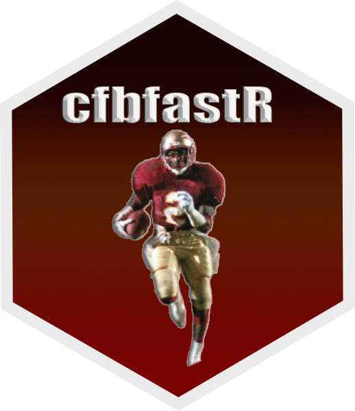

Get college football play-by-play data — modular EPA/WPA pipeline (v2)
Source:R/cfbd_pbp_data_v2.R
cfbd_pbp_data_v2.RdReturns CFBD play-by-play data with optional Expected Points
Added (EPA) and Win Probability Added (WPA) modeling. The modular
successor to cfbd_pbp_data(): a thin orchestrator over the shared
EPA/WPA engine (.run_epa_wpa()), the canonical play-type taxonomy
(.pbp_play_types()), and the canonical output schema
(.pbp_output_order). Side-by-side with the legacy entry point until the
equivalence harness proves the new path matches.
Usage
cfbd_pbp_data_v2(
year,
season_type = "regular",
week = 1,
team = NULL,
play_type = NULL,
epa_wpa = FALSE,
output = "default"
)Arguments
- year
(Numeric required): Season year (e.g.
2024).
Minimum value accepted: 2001- season_type
(Character): Season type —
"regular"(default),"postseason","both","allstar","spring_regular","spring_postseason".- week
(Numeric): Week number.
- team
(Character): Optional team filter (e.g.
"Texas").- play_type
(Character): Optional play-type filter (see cfbd_play_type_df).
- epa_wpa
(Logical): When
TRUE, run the EPA/WPA pipeline and return the modeled frame; whenFALSE(default) return the raw plays + drives + betting join.- output
(Character): controls the modeled-output column set when
epa_wpa = TRUE. Ignored whenepa_wpa = FALSE. Defaults to"default". Must be one of:"default"(recommended) – drops pipeline lag/lead intermediates, redundant alternates (sack_vec,turnover_indicator,kick_play,missing_yard_flag), and drive-result aliases (drive_result2,drive_result_detailed_flag,lag_drive_result_detailed,lead_drive_result_detailed,lag_new_drive_pts). Keepsorig_play_typeandpts_scored(they carry useful per-play information distinct from the canonical columns) and the per-branch WPA scratchpad (wpa_base/wpa_changeetc.). ~75 columns lighter than"full"with no loss of information that isn't trivially rebuildable."lean"– everything"default"drops, plus the WPA computation scratchpad. For dashboards / leaderboards / game logs."full"– legacy behavior, drops only the player-name aliases. For sequential modeling that consumes pre-computed lag/lead shifts or the per-branch WPA decomposition.
Value
A cfbfastR_data tibble. The epa_wpa = TRUE output matches the
legacy cfbd_pbp_data() pipeline-canonical column set on every column
it carries; the output argument controls which intermediate columns
are retained. Documented bug-fix sites are listed in the package
vignette.
Examples
# \donttest{
x <- try(cfbd_pbp_data_v2(
year = 2024, week = 1, season_type = "regular",
epa_wpa = TRUE, output = "default"
))
#> ! Skipping game_id 401655621 with only 18 plays (< 20).
# }